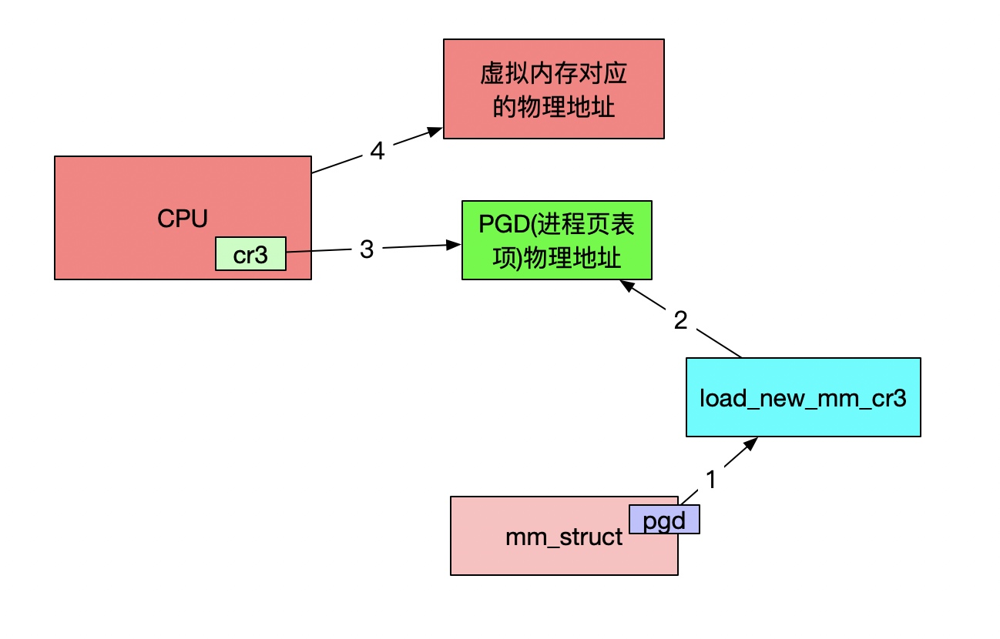

用户态内存映射
内存映射
- 物理内存和虚拟内存之间的映射
- 文件中的内容映射到虚拟内存空间

内存映射文件流程
- 通过文件描述符fd获取struct file
- 调用 get_unmapped_area 找到一个没有映射的区域；
- 调用 mmap_region 映射这个区域
匿名映射
- 调用 mm_struct 里面的get_unmapped_area 函数
- 查找vm_area_struct红黑树的位置
文件映射
- struct file->file_operations->thp_get_unmapped_area
- get_unmapped_area
映射内存区域
- 找到前一个虚拟内存区域的vm_area_struct
- 如果不能合并，创建新的vm_area_struct加入队列
- 通过__vma_link_file建立文件到内存的映射关系
- struct_file的vm_area_struct挂在i_mmap的红黑树上
用户态缺页异常
- 访问虚拟内存没有对应的物理页面
- 调用handle_mm_fault映射区域
- 通过五级进程页表PGD->PUD->PMD->PTE->Offset
- 页表项 task_struct->mm_struct->pgd
- 进程的虚拟地址空间分为用户态和内核态两部分
- 页表也分为用户地址空间的页表和内核页表
- 用户地址空间需要等到进程在CPU上运行，对内存访问的时候
访问物理内存
- context_switch->switch_mm_irqs_off->load_new_mm_cr3
- 
映射
- 匿名页面 分配页表项->分配页
- 文件映射 filemap_fault kmap_atomic，将物理内存映射到内核的虚拟地址空间，得到内核中的地址 kaddr
- swap page kmap_atomic 映射
总结